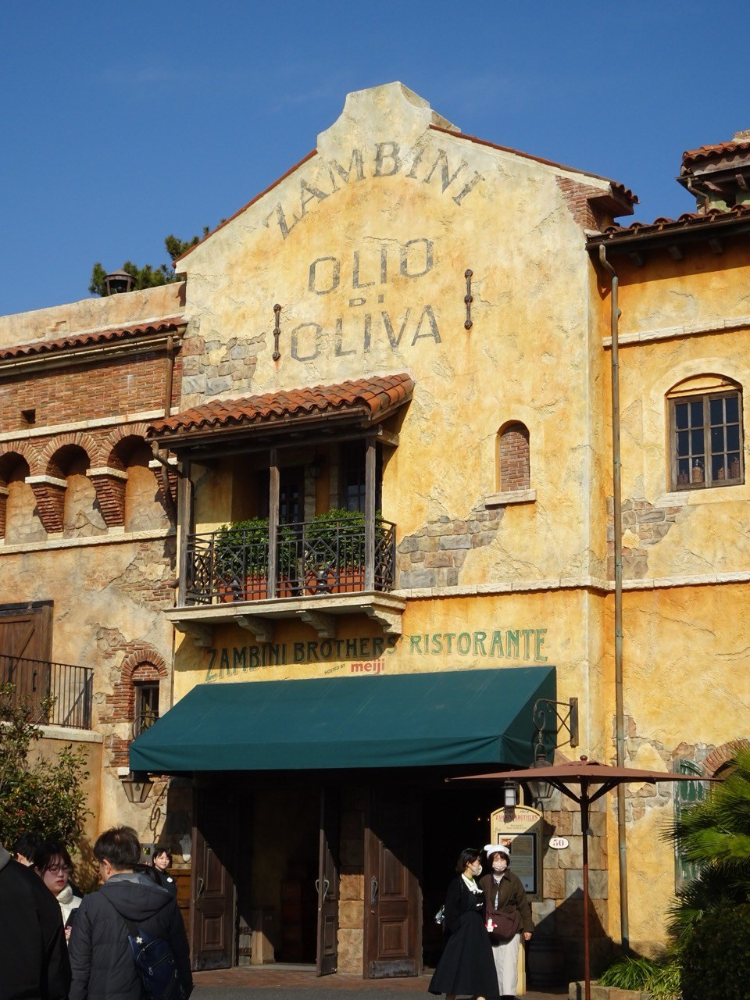
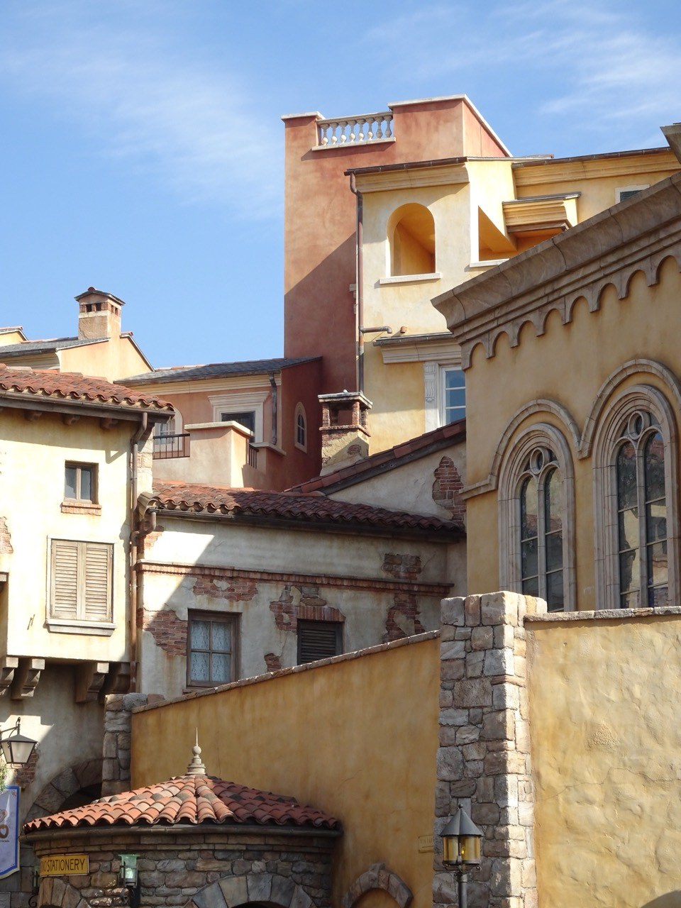
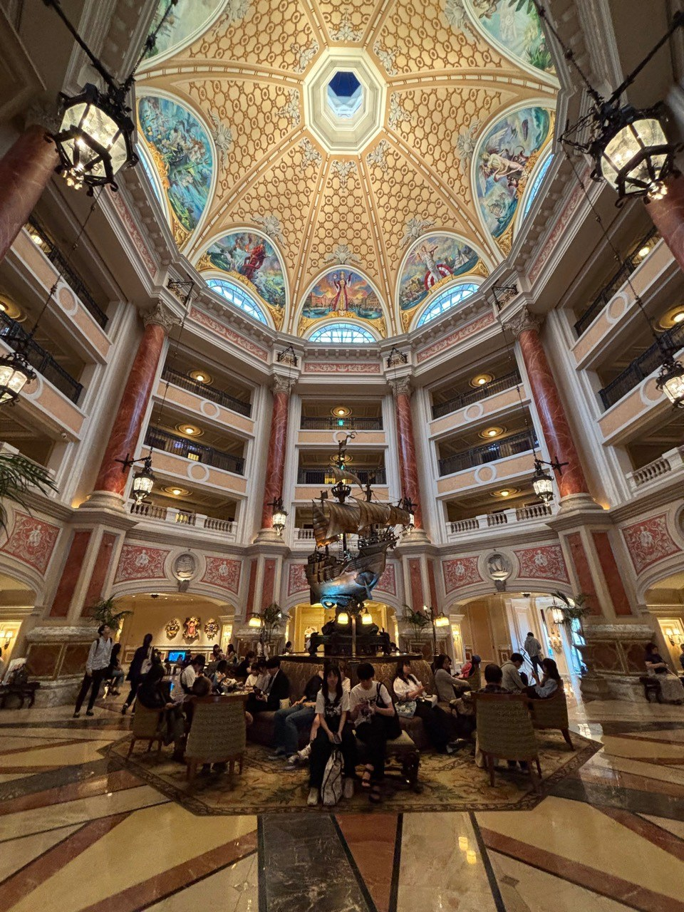
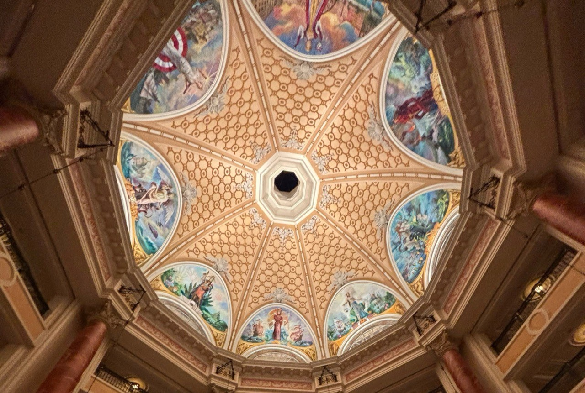
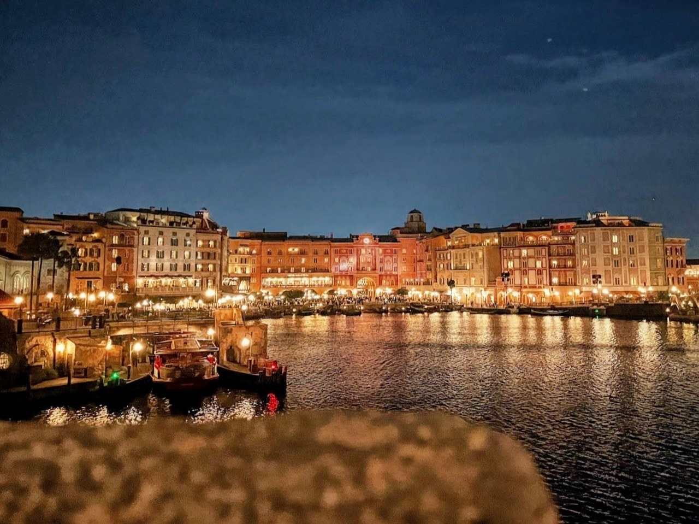

Hotel MiraCosta
ホテルミラコスタ ― ザンビーニ家が旅人を迎えた港港をはさんだ対岸には、探険家たちの要塞が構えています。その人々を迎え、宿と酒蔵と商いで港町を育てたのが、ザンビーニ家でした。
葡萄畑の小道から、建て足された宿の壁、一枚の土地の証書、ロビーのガリオン船まで。ホテルミラコスタのまわりに残る、一族の足跡をたどります。
I. 葡萄畑の坂から、対岸の要塞へ
ヴィア・デッレ・ヴィティ。イタリア語で「葡萄蔓の通り」を意味する小道は、ザンビーニ家の葡萄畑のあいだを抜けて続いています。ザンビーニ・ブラザーズ・リストランテの西側、なだらかな丘に葡萄が育ち、坂の下には、窓の連なる街並みが広がっています。
この港町の名は、ポルト・パラディーゾ。イタリア語で「パラダイスの港」を意味します。町へは、ホテルミラコスタの下をくぐり抜けて入ります。視線を水の先へ移すと、対岸に要塞が構えています。もとは見張りに使われた石造りの塔が立ち、いまは見晴らし台として開かれています。港のまわりには宿や店が並び、華やかな港町の顔をしていますが、この土地はかつて、小さな漁村にすぎませんでした。
転機は十六世紀の初めに訪れます。対岸の要塞が、国際的な学会に譲り渡されました。集まったのは、船乗り、科学者、技術者、芸術家たち。航海の技術や海の探検に打ち込む彼らは、要塞を本拠地として活動を始めます。学会の名は、探険家・冒険家学会、S.E.A.です。
要塞に集う人々は、やがて村にも姿を見せるようになりました。海を渡ってきた客を迎える家が、村の大地主、ザンビーニ家でした。
II. 探険家を迎えた家
ザンビーニ家は、生まれ育った村の発展に尽くした一族です。要塞に集う人々が増えると、一族は自分たちの別荘の部屋を、訪れる人々に提供しはじめました。
やがて噂が広まり、村には世界じゅうから探険家や冒険家が訪れるようになります。一族は、部屋を貸すだけでは終わりませんでした。財産を使って、ホテルや商店、レストラン、ワイナリーを次から次へと建てていきます。小さな漁村は三百年以上にわたって発展を続け、魅力的な港町へと姿を変えました。
港を拓いた一族のひとつとして、ザンビーニ家は長年、おいしいワインと良質なオリーブオイルをつくり続けています。出荷される荷は、港のドックから送り出されます。
時代が下った二十世紀の初め、一族の三兄弟が、ワインとオリーブの圧搾所のひとつをイタリアンレストランに改装しました。長男のプリモ、次男のアントニオ、三男のエンリコ。自分たちの好物をそのままメニューに取り入れた店で、店内には、出荷を待つワインやオリーブオイルが置かれています。
三兄弟の名は、店の外にも刻まれています。ワインのラベルには、レストランの外観と三人の肖像、そして「FRATELLI ZAMBINI」の文字。フラテッリは、イタリア語で「兄弟」を意味します。港の船着き場に積まれた木箱にも、別の港であるアメリカンウォーターフロントの「ニューヨーク・デリ」の壁の大きな広告にも、同じ名が見つかります。ザンビーニの商いは、港の外へも広がっているようです。

III. 宿が広がった街並み
ザンビーニ・ブラザーズ・リストランテの前から、港に沿って視線を移すと、宿の壁がゆるやかに連なっています。いまのホテルミラコスタです。名は、イタリア語で海を眺めることを意味します。始まりは、一族の別荘でした。要塞に集う学者や旅人が増えるたびに建て足され、運河のほうへ広がって、いまの姿になったと伝わります。
壁の表情は、端から端まで一様ではありません。ザンビーニ側から運河側へ進むにつれて、装飾は少しずつ華やかになっていきます。建て足しを重ねた宿を思い描くと、この移り変わりにもうなずけます。
近づくと、見え方の変わるところもあります。遠目には窓や彫刻に見えるものが、壁に描かれた絵だとわかります。館内に入れば、海の生き物をかたどった意匠も、あちらこちらに配されています。
しかし、一族が手放した土地は、旅人のための宿だけに使われたわけではありません。

IV. 一枚の証書に残ったザンビーニの名
ファンタスティック・フライト・ミュージアムのロビーには、博物館の起工式を描いた絵画、開館式典の記念品、館内図などとともに、一枚の土地の証書が展示されています。そこに記された名前は、Zeno Zambini。港の大地主、ザンビーニ家の名です。
この土地を買い取ったのが、チェッリーノ・ファルコでした。彼は一族から土地を購入すると、その土地に、空を飛ぶという人類の永遠の夢に捧げる博物館を建てます。開館は1815年。初代の館長には、創設者であるチェッリーノ自身が就きました。妻のジュリアーナは、鳥への愛情に満ちた人でした。
娘のカメリアは、人生の前半を、世界じゅうを旅して飛ぶ生き物を調べ、飛行にまつわる芸術や科学を研究することに費やします。やがて父から館長を引き継ぐと、S.E.A.の会員に認められた初めての女性として、その名は世界に知れ渡りました。
一族が手放した土地の上に、空への憧れを集める博物館が建ち、その娘は要塞の学会に名を連ねました。ザンビーニの名は、宿や酒蔵だけでなく、一枚の証書のなかにも残っています。
ふたたび港の宿へ戻りましょう。ホテルの一角にも、要塞に集った人々の記憶を宿す場所があります。
V. 要塞の肖像と、ホテルの壁画
要塞のエクスプローラーズ・ホールには、S.E.A.の創設者たちの肖像が並んでいます。マルコ・ポーロ、ヴァスコ・ダ・ガマ、レオナルド・ダ・ヴィンチ。ここでは彼らが、学会の礎を築いた人々として迎えられています。
港をはさんだ対岸のホテルミラコスタにも、同じ人物の名が出てきます。レストラン、シルクロードガーデン。ライトに照らされた青い天井の下、壁には、マルコ・ポーロがイタリアから中国までたどった旅の物語が描かれています。
要塞のホールでは、学会の創設者のひとり。港の宿の壁では、イタリアを発って東へ向かった旅人。ひとりの人物の記憶が、港をはさんだ二つの場所に、別々の顔で残っています。
イタリアの港町に建つ宿で、壁の旅はイタリアから始まります。港に着いた旅人は、出発の地の物語を、食事の席から眺めることになります。
VI. ガリオン船と八枚目の天井画
ホテルのロビーは、古き良きイタリアをテーマにしています。大きな半円形のステンドグラスから陽の光が差し込む、アトリウムのように開けた空間です。調度品や絵画のあいだで見上げると、美術館にあるような大きな絵が、天井に八枚掲げられています。
八枚の天井画のうち、七枚は七つの港を表します。残る一枚が表すのは、土地ではなく、「発見の精神」です。
ロビーで訪れる人を迎えるのは、船長のミッキーが乗るガリオン船の彫刻。通路の壁には古めかしい地図が飾られ、赤い線で、港をめぐる航路が示されています。
船の航海は、客室にも続いています。カピターノ・ミッキー・スーペリアルーム。カピターノは、イタリア語で「船長」を意味します。ミッキーと仲間たちの航海をテーマにしたこの部屋には、ロビーのガリオン船と同じ船で航海する様子の絵が描かれ、寄港地の情景や航海図、ディズニーの仲間たちを描いた星座図が、室内の各所に広がります。ロビーで見上げた船の航海は、客室の壁と天井で、夜の空へと続いていきます。


VII. 港を見下ろす窓
宿の名ミラコスタは、イタリア語で海を眺めることを意味します。客室のなかには、ポルト・パラディーゾの街並みや港を見渡せる部屋もあります。
夕暮れの港は、表情を変えます。パラッツォ・カナルは、イタリア語で「宮殿の運河」を意味する水路。歴史ある建物が並ぶ運河を、ゴンドラが橋の下へすべり込むと、視界がひらけて、ポルト・パラディーゾの港へ出ます。夕陽が水面にきらめく時間です。
運河に面したリストランテ・ディ・カナレットは、十八世紀の画家カナレットの名に由来する店です。カナレットは「小さな運河」を意味し、その名のとおり、テラス席の外を運河が流れています。日が落ちると、この店にも、ホテルの客室にも、灯りがともります。客室からもれるやわらかな明かりが、運河の水面に映ります。
対岸のエクスプローラーズ・ランディングから眺めれば、夜の港は昼とは別の、どこか妖しい美しさを帯びます。
冒頭の坂の途中から見下ろした窓の連なりが、いまは水面にも、もうひとつの街並みをつくっています。

参考資料（17件）
- 東京ディズニーリゾート・ブログ「ふるさとの発展に尽くした、とある一族の物語」（2016年2月24日）
- 東京ディズニーリゾート「ザンビーニ・ブラザーズ・リストランテ」（レストラン紹介ページ）
- 東京ディズニーリゾート・ブログ「商売上手な“FRATELLI ZAMBINI”」（2014年6月11日）
- 東京ディズニーリゾート・ブログ「ワクワクしたい人にオススメ！大航海時代にタイムスリップできる場所とは・・・！？」（2015年8月27日）
- 東京ディズニーリゾート・ブログ「人類の永遠の憧れを夢見て」（2022年7月28日）
- 東京ディズニーリゾート・ブログ「この時計、ど～こだ？」（2022年6月10日）
- 究極雨女ほのぷーのディズニー放浪記「【豆知識】ソアリンのQラインに隠された秘密とは？」（2021年3月30日）
- キャステル「メディテレーニアンハーバーの背景を徹底解明！」（2017年6月6日）
- 華月すみれ／はしづめ「プロのシナリオライターの視点から見る東京ディズニーシーの凝った世界観【エントランス～メディテレーニアンハーバー編】」（note、2024年9月15日）
- 染谷紀子「東京ディズニーシー・ホテルミラコスタを中心としたポルトパラディーゾにみるテーマパークとして表現されたイタリア文化」（京都芸術大学 WEB卒業研究展、2024年）
- 東京ディズニーリゾート「シルクロードガーデン」（ホテルミラコスタ レストラン紹介ページ）
- 東京ディズニーリゾート・ブログ「東京ディズニーシー・ホテルミラコスタ開業20周年もグランドフィナーレ！ ～ホテルキャストにお楽しみスポットを聞いてきました～」（2022年8月26日）
- 東京ディズニーリゾート・ブログ「ロマンティックな気持ちになれる☆ ディズニー流の星座に見守られて素敵な夢を…。」（2014年11月17日）
- 東京ディズニーリゾート・ブログ「時間や季節によって変わる、東京ディズニーリゾートのいろんな表情。～メディテレーニアンハーバー編～」（2018年3月15日）
- 東京ディズニーリゾート・ブログ「東京ディズニーシー・ホテルミラコスタで あなただけの冒険の続きを」（2020年9月3日）
- 東京ディズニーリゾート・ブログ「小さな運河で楽しむ、こだわりの食の旅」（2018年7月13日）
- 東京ディズニーリゾート「東京ディズニーシー・ホテルミラコスタ」（ホテル紹介ページ）
資料確認日：2026年11月21日